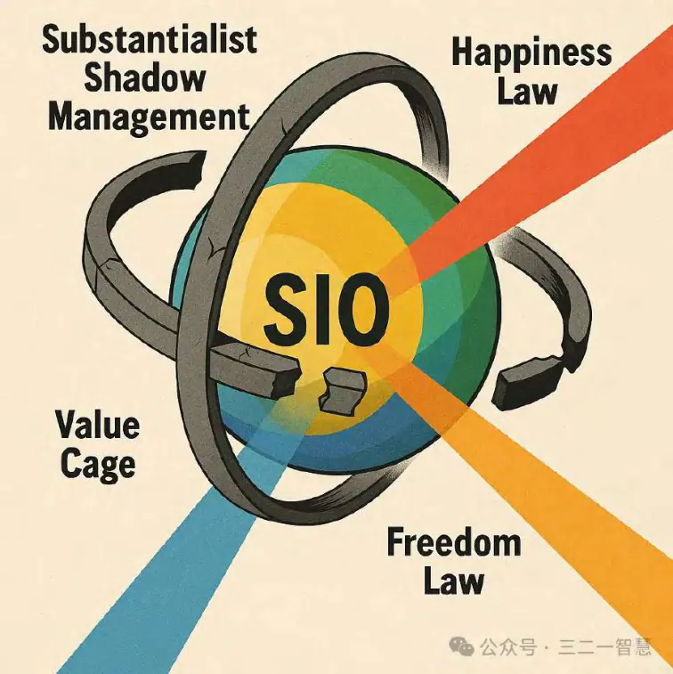

基于GPT的管理新实践智慧
摘要
当代管理正处于一次深刻的范式转型期。工业化时代形成的管理体系，建立在“发现学”逻辑与“影子化”本体之上——将人（S）、事（I）、物（O）分割管理，假设它们之间的相互作用可以忽略。这种模式在环境稳定、信息量有限的条件下行之有效，但在当下高速变化、信息流与价值观多元化并存的世界中，正逐渐暴露出滞后性、僵化性与失真性。
发生学三大革命正是对这一局限的系统性回应：
1. 本体革命——从“管人、管事、管物”的影子化管理，转向以SIO整体（主体-互动-客体）为唯一真实管理对象。SIO是强耦合系统，其信息量随每个要素的变化呈指数级增长。传统偏导数=0的管理假设将信息量压缩为线性规模，牺牲了对真实复杂性的捕捉。本体革命的核心是回归整体，承认并利用S、I、O之间的相互作用，使管理决策建立在全域信息与动态关系之上。
2. 价值革命——从真、善、美的静态外在标签管理，转向以幸福律、特征律、自由律为驱动力的意义管理。真（轨迹稳定）对应特征律，善（速度效率）对应幸福律，美（粘性吸引）对应自由律。在当代，不同组织的三律权重组合日益多样化，价值观呈现个性化与多元化。价值革命的突破在于：用三律运行的机制统一性作为底层逻辑，通过调整权重实现价值的个性化生成。这种“机制统一性 + 个性化管理”的模式，为价值多元化时代提供了可编程的管理框架。
3. 方法革命——从静态的“规律发现”转向动态的“规律生成”，将管理重新定义为权力发生的波模式调节——实时生成并优化SIO运行的轨迹（真）、速度（善）、粘性（美）。在发生学范式中，规律不是先验存在的外部真理，而是在互动中不断生成、验证与调整的动态结构。方法革命要求管理者具备即时设计、快速试验与持续迭代的能力。
在这一三大革命的整体框架下，GPT等大型语言模型成为管理新实践智慧的技术中枢：作为语义聚合器，打通部门与系统间的数据孤岛，整合结构化、半结构化、非结构化信息；
作为三律诊断器，实时评估幸福律、特征律、自由律的运行状态与权重平衡；
作为波模式调节器，根据情境生成轨迹、速度、粘性的动态优化方案；
作为决策协作助手，将策略嵌入管理流程，实现数据-分析-执行-反馈的闭环。
这种结合，使管理不再是对既有规则的套用，而是对动态情境的即时响应与再创造。GPT赋能的三律管理，能够在统一机制的底层保障下，为不同组织、行业、文化背景生成独特的管理路径，既维持方向的稳定，又保障速度的高效与粘性的持续。
本研究不仅提出了发生学三大革命的理论框架，还提供了从理念导入、数据与技术建设，到中台闭环与文化生态化的分阶段落地路径，涵盖风险应对与伦理考量。通过这一转型，管理的使命将从“维持秩序”转向“生成意义”，从静态控制转向动态协同，从外部驱动转向内生智慧。这不仅是一次方法论的升级，更是一场管理文明的跃迁——在三律机制统一性的引导下，实现个性化的价值生成与持续的实践创新。
引言
一、管理的十字路口：旧范式的困境
在过去的一个多世纪里，现代管理学自泰罗的科学管理、法约尔的职能理论、韦伯的官僚制，到彼得·德鲁克的人本管理与知识管理，一直扮演着推动企业和组织高效运转的智力引擎。在工业化和早期信息化的背景下，这套体系行之有效：
组织结构稳定，战略周期较长；
信息传递成本高，但数据量有限；
价值观相对统一，管理者可以依赖一套通用的规则和标准。
然而，进入 21 世纪第三个十年，全球化、网络化、数字化的浪潮叠加而来，管理的外部环境发生了根本性转变：
1. 变化速度前所未有：技术迭代、市场波动、供应链重组的节奏越来越快；
2. 信息量与复杂度爆炸：数据来源多元化、更新频率高、跨部门跨系统交织；
3. 价值多元化加剧：不同文化、世代、行业的价值权重组合显著差异化；
4. 不确定性常态化：黑天鹅与灰犀牛事件成为常见扰动源。
在这样的环境中，传统管理模式开始显现结构性失效：
滞后性：依赖历史经验和固定流程的管理反应速度跟不上环境变化；
僵化性：制度和流程难以快速调整，创新空间被压缩；
失真性：将复杂的整体互动简化为“人、事、物”的分割管理，导致信息损失与决策偏差。
这不仅是效率问题，更是管理哲学与方法论的根本危机。
二、旧范式的隐性假设：发现学与影子化本体
深入分析会发现，传统管理的底层逻辑建立在两个隐性假设之上：
（1）发现学假设
即假设管理规律是客观存在的、类似物理定律的外部真理，可以通过观察、归纳发现出来，再加以应用。这种思路鼓励总结“最佳实践”，并试图跨情境推广。然而，这忽视了管理规律的情境依赖性——在稳定环境中有效的规则，在动态环境中可能迅速失效。
（2）影子化本体假设
即将管理对象割裂为人（S）、事（I）、物（O）三类元素，并假设它们之间的相互作用可以忽略（数学上等于偏导数=0）。这种假设极大地降低了信息处理复杂度——如果每个维度变化规模是 N，那么整体信息量由 N×N×N（立方级）被压缩为 N+N+N（线性级）。然而，这种“影子化”的简化牺牲了对真实复杂性的捕捉力，在强耦合系统中必然导致决策失真。
这两个假设在工业化时代是有利的：环境稳定、变化可预测、耦合效应相对可控。但在今天的高耦合、高速变化环境中，它们反而成为制约组织生存与发展的瓶颈。
三、发生学视角：从维持秩序到生成意义
面对复杂性与不确定性，管理必须从根本上更新认知框架。
发生学提供了一种新的出发点：
本体论转向：不再将主体（S）、互动（I）、客体（O）视为独立存在，而是把它们看作不可分割的整体——SIO复合体。任何一个元素的变化都会通过互动影响其他元素，形成动态的生成性过程。
方法论转向：不再假设规律是先验存在的，而是承认规律是在互动中不断生成、验证和调整的。这意味着管理的核心任务是设计、调节和引导生成过程，而非简单执行既有规则。
价值论转向：不再将价值视为外部标签（真、善、美）去衡量组织，而是将它们视为幸福律、特征律、自由律运行的自然结果。这样，价值多元化不再是问题，而是机制统一性下的正常表现。
四、三大革命的逻辑框架
基于发生学视角，管理的转型必须经历三大革命：
1. 本体革命
从影子化到SIO整体管理
管理对象不再是割裂的“人、事、物”，而是SIO整体。管理的任务是理解并利用S、I、O之间的耦合关系，实现全域信息的整合与动态调节。这一转变要求管理者具备系统思维，并借助智能技术应对指数级信息复杂度。
2. 价值革命
从外在标签到意义管理
真=轨迹稳定（特征律）、善=速度效率（幸福律）、美=粘性吸引（自由律）。不同组织的三律权重组合不同，导致价值表象多元化。价值革命的目标是在机制统一性的基础上，通过调整权重实现个性化管理——这就是“机制统一性 + 个性化编程”的意义管理模式。
3. 方法革命
从发现学到发生学
规律不是先验存在的，而是在SIO整体运行中实时生成的。管理是权力发生的波模式调节：设计轨迹、调节速度、塑造粘性。这要求管理具有即时设计、快速迭代和动态优化的能力。
五、GPT的角色：实践智慧的加速器
这三大革命的落地，离不开新一代智能系统的支持。GPT等大型语言模型在这里扮演四个关键角色：
1. 语义聚合器：打破信息孤岛，整合结构化、半结构化、非结构化数据；
2. 三律诊断器：实时评估幸福律、特征律、自由律的运行状态与权重平衡；
3. 波模式调节器：根据情境生成轨迹、速度、粘性的动态优化方案；
4. 决策协作助手：将策略嵌入管理流程，形成数据—分析—执行—反馈的闭环。
通过GPT，三律管理的机制统一性可以被编程化，个性化管理可以实时生成并落地执行。统一的机制像操作系统内核，个性化的权重配置与调节规则则是应用程序，而GPT是内核与应用之间的调度器与编译器。
六、从控制到生成：管理使命的重构
在发生学三大革命的框架下，管理的使命将发生根本转变：
从控制与维持秩序，转向生成与引导意义；
从静态规则执行，转向动态机制调节；
从外部驱动，转向内生智慧。
这种转变不仅仅是理论上的更新，更是实践上的必然要求。没有统一的生成机制，就无法在多元化价值中找到稳定的导航；没有个性化的权重调节，就无法在不同情境下生成有效的管理策略；没有智能系统的实时支持，就无法在指数级复杂度的环境中维持管理的生命力。
七、引言结语
《管理的发生学三大革命——基于GPT的管理新实践智慧》的核心使命，是提供一种既能应对复杂性，又能容纳多样性，还能保持生成力的管理新范式。本体革命重塑了管理对象的真实结构，价值革命建立了机制统一性与个性化生成的桥梁，方法革命赋予了管理动态生成规律的能力，而GPT则为这一切提供了实时感知、智能调节与自动执行的技术基础。
未来的管理者，将不再是规则的执行者，而是生成机制的设计师与调度者；管理系统，将不再是死板的机器，而是能够自适应、自进化的生命网络。这就是发生学三大革命要开启的管理新时代。
第一编本体革命：从影子化管理到SIO整体管理
第一章影子化管理的本质与局限
1. 影子化管理的形成背景
在传统管理学中，管理对象被划分为三个相对独立的领域：
管人（Subject，S）：人力资源管理、组织行为、激励机制；
管事（Interaction，I）：流程优化、项目管理、执行协调；
管物（Object，O）：资产管理、资源调配、物资与信息流。
这种划分并非偶然，而是工业化、官僚化管理体系在面对有限信息量时的理性选择：
信息采集与处理的成本高昂；
管理决策的周期长、变动少；
各要素之间的耦合性较低，可以被近似为独立处理。
因此，在早期，将S、I、O割裂管理可以显著降低信息复杂度，减少决策成本，提高可操作性。
2. 数学化的影子化假设
如果我们假设：
S（主体）的变化可能性规模 = NS
I（互动）的变化可能性规模 = NI
O（客体）的变化可能性规模 = NO
那么：
影子化管理的信息量 = NS+NI+NO
（假设各维度独立、偏导数 = 0）
整体SIO管理的信息量 = NS×NI×NO
（考虑全耦合关系）
当 NS=NI=NO=100时：
影子化管理信息量：100+100+100=300
SIO整体管理信息量：100×100×100=1,000,000100
这个差异是数量级的：影子化管理处理的是线性信息量，而真实世界运行在指数级信息量的整体耦合中。
3. 影子化的局限性
在稳定环境下，影子化管理能高效运作，但在当今高度耦合的环境中，其弊端日益显现：
1. 信息损失：割裂管理忽视了要素之间的实时交互效应；
2. 决策延迟：缺乏对整体动态的实时把握，导致反应滞后；
3. 创新受限：固定结构难以激发跨领域协同创新；
4. 系统脆弱性：无法应对跨要素的突发联动变化。
第二章 SIO整体管理的发生学定义
1. SIO整体的本体结构
SIO = Subject（主体） + Interaction（互动） + Object（客体）
主体（S）：有目标、有意图的个体或组织；
互动（I）：S与S、S与O之间的行为与关系过程；
客体（O）：互动中涉及的资源、环境、物理或信息载体。
在发生学本体论中，这三者是一个不可分割的整体：
任何一个要素的变化都会通过互动影响其他要素；
整体状态是三者相互作用的产物，而不是简单相加的结果。
2. 整体管理的核心假设
与影子化不同，SIO整体管理承认：
1. 强耦合性：S、I、O的变化相互依赖；
2. 动态生成性：规律在互动过程中不断生成；
3. 三律嵌入性：幸福律、特征律、自由律在整体运行中同时存在并相互作用。
3. SIO整体管理的价值
全域信息整合：捕捉指数级的信息关系，减少盲区；
动态响应能力：能够随环境变化实时调整策略；
跨界创新能力：利用耦合效应产生新模式、新方案；
系统韧性：增强组织对不确定性的适应力。
第三章三律在本体革命中的作用
1. 幸福律（张力-转换-释放）
驱动系统的运行速度与效率，确保能量在矛盾化解中被释放。
2. 特征律（差异-稳定-识别）
保证系统轨迹的方向性与身份一致性，避免战略漂移。
3. 自由律（可能性-选择-扩展）
维持系统的粘性与吸引力，让参与者自愿留在互动中。
在SIO整体中，三律不是可选项，而是内在运行机制的三个维度。本体革命要求管理者从单一维度优化转向三律同时调节。
第四章 GPT赋能下的SIO整体管理
1. 为什么需要GPT
SIO整体管理处理的是百万级甚至更高的信息复杂度，人类管理者无法单靠经验或直觉实时处理。GPT等大模型具备：
语义聚合：跨部门、跨系统、跨格式整合信息；
模式识别：从复杂数据中识别三律运行状态与变化趋势；
策略生成：动态生成轨迹、速度、粘性的优化方案；
实时反馈：嵌入执行系统进行自动化调节。
2. GPT在本体革命中的角色
整体感知器：实时感知SIO整体状态；
三律诊断器：量化幸福律、特征律、自由律健康度；
调节执行器：将调节策略直接落地到业务流程；
知识进化器：在执行反馈中持续优化管理模型。
第五章案例：从影子到整体的管理跃迁
案例1：制造企业的供应链管理
影子化问题：采购、生产、销售独立运作，缺乏全局协调；
SIO整体管理改造：
整合供应链数据（S）、订单与生产互动（I）、库存与物流（O）；
GPT实时分析需求波动，调整生产计划与运输节奏；
三律优化：特征律确保战略方向，幸福律提高生产速度，自由律增强合作伙伴粘性。
结果：库存周转率提升20%，交付周期缩短15%。
案例2：互联网平台的用户运营
影子化问题：市场部、产品部、客服部分割管理用户数据；
SIO整体管理改造：
整合用户画像（S）、交互行为数据（I）、平台功能与内容（O）；
GPT识别粘性下降原因，生成个性化留存策略；
三律优化：自由律提升内容多样性，幸福律优化响应速度，特征律保持品牌一致性。
结果：用户留存率提高18%，活跃度提升25%。
第六章本体革命的落地路径
1. 认知转型
管理团队学习SIO整体观与三律机制；
2. 数据整合
打破信息孤岛，建立统一的数据平台；
3. 三律监测
用GPT构建幸福律、特征律、自由律的实时监测模型；
4. 策略执行
将GPT生成的调节策略嵌入工作流与决策系统；
5. 持续优化
通过执行反馈优化三律权重与运行规则。
第七章小结
本体革命的核心，是承认并利用SIO整体的强耦合性与动态生成性，在三律机制的指导下，实现信息全域整合与动态调节。GPT的引入，使这一模式从理论可能变为实践可行，为价值革命和方法革命奠定了坚实基础。
从影子到整体，是管理哲学的更新；
从线性到指数，是信息处理能力的跃迁；
从静态到动态，是组织生命力的重构。
第二编价值革命：从外在标签到意义管理
第一章价值管理的历史逻辑
1. 价值管理的提出背景
在 20 世纪的管理理论中，彼得·德鲁克等大师将“价值”作为管理的核心导向。他们强调，管理不仅是资源配置的技术，更是实现组织与社会共同利益的手段。因此，真（Truth）、善（Goodness）、美（Beauty）成为价值管理的重要三元维度：
真：管理的正确性与事实基础，确保方向不偏离；
善：管理过程的伦理性与关怀性，减少冲突和痛苦；
美：组织文化和结果的吸引力，让人愿意参与其中。
在工业化和早期信息化时代，真善美的三元框架在全球范围内被广泛接受。企业通过KPI、合规管理和品牌建设分别对应真、善、美，从而形成一个看似完整的价值管理体系。
2. 静态标签的局限性
虽然“真善美”在理论上有高度的普适性，但在今天的动态环境中，它们作为静态外在标签的模式暴露出严重不足：
1. 定义漂移：不同文化、行业甚至同一组织不同阶段，对真、善、美的理解大相径庭；2. 事后评估：价值管理更多是在事后检验是否符合真善美，而不是在运行过程中动态生成；
3. 缺乏生成机制：真善美被视为外部标准，而非管理过程内生的自然结果。
第二章三律与价值的内在映射
1. 三律的发生学机制
幸福律、特征律、自由律是 SIO 整体运行的三种核心动力：
幸福律：通过张力—转换—释放的循环，提高运行效率和速度；
特征律：通过差异—稳定—识别，确保方向稳定与身份一致性；
自由律：通过可能性—选择—扩展，增强参与吸引力与互动粘性。
2. 真善美与三律的对应关系
通过发生学的分析，可以将真、善、美重新解释为三律的外化表象：
真 = 轨迹稳定 = 特征律驱动
确保战略方向一致，减少漂移与不确定性。
善 = 速度效率 = 幸福律驱动
在减少阻力与摩擦中实现高效运作。
美 = 粘性吸引 = 自由律驱动
提供多样化可能性，吸引并留住参与者。
3. 机制与表象的分层
在这种映射下：
机制层：幸福律、特征律、自由律（普遍性、一致性、可调节性）；
表象层：真、善、美（多样化、文化化、情境依赖）。
这意味着，不同组织的真善美差异，根源在于三律权重组合的不同，而非价值本身的矛盾。
第三章三律权重多样化与价值多元化
1. 权重组合的多样化
当代组织面临的情境千差万别：
高风险行业（如航空、医疗）：特征律权重最高，真优先于善与美；
创新驱动型企业（如科技初创）：自由律权重最高，美优先于真与善；
平台经济与社交企业：自由律与幸福律权重高，追求高粘性与高效率；
公益与社会组织：幸福律与自由律权重高，强调体验、包容与参与。
2. 价值多元化的必然性
由于三律权重配置的多样化：
同一个“真”在不同组织中可能有不同含义；
“善”可能在制造业等于效率，在公益领域等于关怀；
“美”可能在文化产业等于审美，在互联网平台等于用户留存。
3. 静态价值管理的失效
德鲁克式的普遍价值管理，依赖真善美的稳定内涵。但在多元化环境中，这一假设已失效，必须转向对价值生成机制的直接管理。
第四章意义管理：机制统一性 + 个性化编程
1. 机制统一性
意义管理的核心思想是：
三律的运行机制是普遍的、稳定的；
无论表象如何变化，幸福律、特征律、自由律的逻辑一致；
管理应直接作用于机制层，而非试图统一表象层。
2. 个性化编程
在机制统一性的基础上，管理可以：
调整三律权重（参数化设置）；
定义调节规则（策略模块）；
利用 GPT 在运行中实时调节权重与策略。
3. 管理编程的结构比喻
意义管理就像一个操作系统：
内核：三律机制（普遍适用）；
配置文件：权重参数（个性化管理）；
应用程序：真善美表象（文化与情境适配）；
调度器：GPT 实时监测与调节机制与表象的匹配。
第五章 GPT赋能下的价值革命
1. 语义聚合
GPT 能够跨部门、跨系统整合价值相关信息：员工反馈、市场信号、绩效数据、文化指标。
2. 三律诊断
通过自然语言处理与多模态分析，GPT 可实时计算幸福律、特征律、自由律的健康度及权重变化趋势。
3. 策略生成
GPT 能根据诊断结果，生成提升轨迹稳定（真）、速度效率（善）、粘性吸引（美）的动态方案。
4. 个性化落地
策略直接嵌入任务管理、流程引擎、文化活动中，实现机制统一性下的个性化价值生成。
第六章案例：价值革命的实践
案例1：跨国制造企业的质量与创新平衡
问题：高标准质量管理导致创新速度下降；
调节：降低特征律权重、提高自由律权重；
GPT作用：识别创新受阻的流程环节，生成降低管控刚性但保持核心质量的方案；
结果：新产品上市周期缩短 20%，客户满意度保持稳定。
案例2：互联网社区的留存与秩序平衡
问题：高自由度导致社区内容质量下降；
调节：提高特征律权重、保持自由律高位；
GPT作用：设计自动内容审核与社区奖励机制的组合方案；
结果：留存率提高 15%，违规内容下降 40%。
第七章小结
价值革命的本质，是从静态、外在的真善美标签，转向动态、内在的三律机制调节：
机制统一性确保了跨情境的稳定性与普遍性；
个性化编程允许根据情境差异灵活生成价值表象；
GPT赋能让这一过程实现实时感知、动态优化与自动落地。
真善美不再是管理的起点，而是意义三律运行的自然结果。
价值管理的未来，不是统一表象，而是统一机制 + 多元生成。
第三编方法革命：从发现学到发生学
第一章发现学的历史逻辑与边界
1. 发现学的基本假设
在传统管理学中，“发现学”是一种根本方法论假设：
规律先在性：管理规律被认为是客观存在的，类似自然科学中的物理定律；
归纳发现性：通过观察优秀企业或历史案例，总结出可推广的“最佳实践”；
稳定适用性：假设规律可以跨行业、跨情境稳定适用。
这套逻辑在工业化和早期信息化时代非常有效。环境变化缓慢，制度稳定，跨情境的管理规则往往可以延续数十年。
2. 发现学的优势与不足
优势：
提供了学习与模仿的捷径；
方便标准化与规模化推广；
降低管理试错成本。
不足：
滞后性：规律形成依赖历史数据，面对突变时失效；
僵化性：固定流程难以快速适应新情境；
局部性：所谓普遍规律往往是在特定文化与行业背景下提炼的。
3. 当代环境对发现学的冲击
变化加速：技术、市场、政策变化速度超出规律总结周期；
多元化：不同组织的三律权重组合差异巨大，“普遍规律”不再适用；
信息耦合：SIO整体运行的复杂性远超影子化管理假设。
这使得管理必须摆脱“规律是发现的”思维，转向“规律是生成的”范式。
第二章发生学的管理定义
1. 发生学的核心假设
规律生成性：管理规律不是先验存在，而是在SIO整体运行中动态生成的；
情境依赖性：规律依赖于当前的三律权重组合与环境条件；
可调节性：管理者可以通过调节机制影响规律的生成方向与结果。
2. 管理 = 权力发生的波模式
在发生学中，管理被重新定义为：
管理是对SIO整体运行的轨迹、速度、粘性进行实时设计与调节的过程。
这三个要素是权力在组织中发生的波模式表现：
轨迹（Trajectory）：方向与路径，确保SIO运行在目标空间内；
速度（Speed）：运行节奏与效率，决定能量转化率；
粘性（Stickiness）：吸引力与留存度，决定参与持续性。
3. 三律与波模式的映射
轨迹 = 真 = 特征律驱动
保证方向与身份稳定性。
速度 = 善 = 幸福律驱动
优化张力释放与效率。
粘性 = 美 = 自由律驱动
提供多样化可能性与参与吸引力。
第三章轨迹、速度、粘性的发生机制
1. 轨迹发生（特征律驱动）
定义：SIO运行方向与路径的生成与稳定过程；
目标：减少战略漂移与方向性冲突；
调节手段：愿景塑造、战略一致性、路径校准；
指标：战略一致率、纠偏速度、目标达成率。
2. 速度发生（幸福律驱动）
定义：SIO在轨道上的运行效率与节奏；
目标：在不失稳的前提下最大化能效；
调节手段：流程优化、瓶颈消除、节奏同步；
指标：执行周期、成本效率、响应时间。
3. 粘性发生（自由律驱动）
定义：SIO维持参与者与资源持续投入的能力；
目标：减少流失、增加参与深度；
调节手段：文化建设、体验设计、关系网络；
指标：留存率、参与时长、满意度。
第四章 GPT赋能下的波模式调节
1. 数据感知层
收集结构化（财务、KPI）、半结构化（业务日志）、非结构化（邮件、访谈）数据；
实时监测轨迹、速度、粘性的运行状态。
2. 分析诊断层
GPT 对数据进行语义解析，识别三律运行状态与健康度；
分析轨迹偏差、速度失衡、粘性下降的原因。
3. 策略生成层
根据分析结果，生成轨迹优化、速度调节、粘性提升的方案；
将方案参数化，便于个性化调整。
4. 执行反馈层
将策略嵌入工作流、任务管理、文化活动中；
收集执行效果反馈，优化下一轮策略生成。
第五章案例：方法革命的实践
案例1：零售企业的库存与销售平衡
问题：库存积压与缺货并存；
分析：轨迹偏差（需求预测与库存管理脱节）、速度失衡（补货慢）、粘性下降（客户流失）；
GPT作用：
整合销售与库存数据；
调整轨迹（优化预测模型）；
提高速度（自动补货建议）；
增强粘性（个性化促销）；
结果：库存周转率提高 22%，客户留存率提升 15%。
案例2：教育机构的学员参与度
问题：课程完成率低、退课率高；
分析：粘性不足（自由律偏低）、轨迹模糊（学习目标不清）、速度失衡（进度与能力不匹配）；
GPT作用：
定义个性化学习轨迹；
动态调节课程节奏；
增加互动活动提升粘性；
结果：课程完成率提升 30%，学员满意度提高 18%。
第六章方法革命的落地路径
1. 认知重塑：管理层接受规律生成性的观念；
2. 数据基建：打通跨部门的实时数据流；
3. 三律监控：部署轨迹、速度、粘性监测系统；
4. 策略引擎：GPT生成并调度个性化管理方案；
5. 持续进化：通过反馈优化权重与调节规则。
第七章小结
方法革命的核心，是从被动发现规律转向主动生成规律，从静态规则执行转向动态机制调节：
轨迹保证方向稳定；
速度确保运转高效；
粘性维持长期参与。
在 GPT 的赋能下，三要素可以实时监控与调节，实现管理的自适应、自进化能力。
管理者的角色，从规则的执行者变为生成机制的设计师；
组织的形态，从静态机器变为动态生命网络。
第四编 GPT驱动的三律管理生态与落地路径
第一章三律管理生态的总体构想
1. 定义
三律管理生态是以幸福律、特征律、自由律为底层运行机制，以SIO整体管理为本体基础，以权力波模式调节为方法路径，借助 GPT 等智能系统，实现实时感知—动态生成—即时执行—持续优化的闭环管理系统。
2. 架构特征
本体统一性：管理对象是SIO整体，信息耦合全面捕捉；
机制统一性：三律运行规律不随行业、文化、阶段改变；
表象多样性：真善美的价值表象可根据权重组合个性化生成；
智能协同性：GPT作为数据与策略的中枢，实现人机协同调节。
第二章 GPT在三律管理生态中的角色
1. 语义聚合器
功能：整合结构化、半结构化、非结构化数据（业务数据、员工反馈、市场信号、文化指标）；
价值：打破信息孤岛，让SIO三要素在同一语义框架中被理解。
2. 三律诊断器
功能：计算幸福律、特征律、自由律的运行状态与权重比例；
方法：基于多模态数据分析（KPI、文本情感、互动频率等）；
价值：提供机制层的实时健康度监控。
3. 波模式调节器
功能：生成轨迹、速度、粘性的动态优化方案；
逻辑：映射到真（特征律）、善（幸福律）、美（自由律）的表象目标；
价值：让管理策略适应当下情境并保持机制一致性。
4. 决策协作助手
功能：与管理者互动解释方案逻辑、可选方案比较、风险提示；
价值：减少策略执行中的阻力与误解。
第三章三律管理的闭环运行模型
1. 感知层（数据采集）
来源：ERP、CRM、IoT传感器、邮件、会议纪要、社交平台；
特征：实时性、多模态、跨部门整合。
2. 理解层（语义整合）
任务：识别S（主体）、I（互动）、O（客体）的状态与关系；
工具：GPT语义解析 + 知识图谱构建。
3. 分析层（三律诊断）
输出：幸福律、特征律、自由律的健康度指数；
应用：识别轨迹偏差、速度失衡、粘性下降等问题。
4. 生成层（策略制定）
输出：短期调节方案 + 长期优化策略；
方式：参数化输出，便于个性化调整与迭代。
5. 行动层（执行与嵌入）
落地：通过API将方案嵌入任务管理系统、绩效考核、文化活动；
特点：自动化触发、人工确认相结合。
6. 反馈层（监控与优化）
过程：收集执行结果与市场反馈；
目标：优化下一轮三律权重配置与调节规则。
第四章分阶段落地路径
阶段一：认知导入（1-3个月）
目标：让管理层理解SIO整体、三律机制、波模式调节的核心思想；
行动：内部培训、案例研讨、试点情境演练。
阶段二：数据与技术基础建设（3-9个月）
目标：打通跨部门数据流、建立多模态数据采集系统；
行动：统一数据标准、部署API接口、搭建数据湖。
阶段三：GPT中台部署（9-18个月）
目标：将GPT接入管理中台，形成语义聚合、三律诊断、策略生成能力；
行动：建立实时监控面板、策略调度引擎、决策支持界面。
阶段四：闭环管理试点（18-24个月）
目标：在一个业务单元或部门内实现感知-分析-生成-执行-反馈闭环；
行动：选择高影响场景（如供应链、用户运营）进行试点，收集改进建议。
阶段五：文化生态化（24个月以后）
目标：将三律健康度纳入核心绩效指标，让机制调节成为组织习惯；
行动：跨部门推广、建立跨组织三律协作网络。
第五章风险与应对
1. 数据隐私与安全
风险：敏感信息在多系统整合中可能泄露；
应对：私有化部署、数据脱敏、分级访问权限。
2. 组织文化阻力
风险：管理层或员工抵触AI介入管理；
应对：透明化策略逻辑、强调AI增强而非取代人类。
3. 过度依赖技术
风险：忽视人类直觉与伦理判断；
应对：关键决策保留人工审核环节。
第六章小结
GPT驱动的三律管理生态，将前三编的三大革命落地为一个可实施的系统：
本体革命 → SIO整体管理提供全域感知能力；
价值革命 → 机制统一性与个性化编程指导价值生成；
方法革命 → 波模式调节实现动态优化。
GPT在其中是机制与表象之间的翻译器、调度器与执行者，使组织管理从静态规则执行转向动态意义生成，实现自适应、自优化、自进化的管理文明。
第五编结论与展望
第一章全书核心回顾
本书以“管理的发生学三大革命”为理论核心，提出并论证了管理从工业化遗留的“影子化管理 + 发现学”范式，转向“SIO整体管理 + 意义管理 + 波模式动态调节”的新模式，并通过 GPT 的赋能，构建了可实时运行、可个性化编程、可自我进化的管理生态系统。三大革命的逻辑主线如下：
1. 本体革命：
从管人、管事、管物的分割式管理，转向以主体（S）、互动（I）、客体（O）整体为管理对象；
承认并利用 SIO 的强耦合性与动态生成性；
在指数级信息复杂度面前，必须借助 GPT 等智能系统进行全域感知与整合。
2. 价值革命：
从静态、外在的真善美标签，转向以幸福律（善）、特征律（真）、自由律（美）为驱动力的意义管理；
机制统一性确保跨情境稳定性，个性化编程允许价值表象多样化生成；
GPT 在其中充当价值生成的参数调节器与个性化落地引擎。
3. 方法革命：
从被动发现规律转向主动生成规律；
将管理定义为权力发生的波模式调节——动态设计轨迹（真）、速度（善）、粘性（美）；
GPT 实现轨迹、速度、粘性的实时监测与优化。
4. GPT驱动落地路径：
构建感知—理解—分析—生成—执行—反馈的闭环；
分阶段推进，从认知导入到文化生态化；
实现管理的自适应、自优化与自进化。
第二章方法论与哲学意义
1. 从“控制”到“生成”
传统管理的核心是控制——维持秩序、降低波动、执行标准。而发生学三大革命将管理的使命转变为生成——在动态环境中生成最优的轨迹、速度、粘性组合，生成符合当下情境的价值表象，生成组织与成员共同的意义感。
2. 从“普遍原则”到“统一机制 + 多元生成”
传统管理追求一套跨行业、跨文化的普遍原则，容易在多元化环境下失效。发生学管理强调统一机制（幸福律、特征律、自由律）作为底层逻辑，再通过权重配置实现多元生成，这既保留了稳定性，又兼容差异性。
3. 从“事后总结”到“实时调节”
发现学模式的规律提炼往往依赖事后数据分析，而发生学模式依赖实时数据流与动态反馈，在运行过程中不断生成、验证、优化规律。
第三章 GPT赋能的独特价值
1. 数据与语义的整合器
GPT 能将分散在不同系统、部门、格式中的信息统一到一个语义框架中，为 SIO 整体感知提供技术基础。
2. 三律健康度的诊断器
通过自然语言理解、多模态分析与模式识别，GPT 可实时输出幸福律、特征律、自由律的健康度指数，并发现偏差趋势。
3. 波模式调节的生成器
根据诊断结果，GPT 能生成兼顾机制统一性与个性化的调节方案，并用参数化形式快速落地。
4. 管理文化的催化器
当 GPT 被深度嵌入管理流程后，三律健康度与动态调节将成为组织的日常对话语言，从而推动文化转型。
第四章未来应用前景
1. 跨组织治理
三律管理生态不仅适用于单一企业，还可延伸至跨企业联盟、产业链协同、国际合作治理，实现不同组织间的动态平衡与协作。
2. 城市与公共管理
在智慧城市治理中，轨迹（城市发展方向）、速度（服务与响应效率）、粘性（市民参与度）可通过三律调节实现均衡发展。
3. 社会创新与公益
三律机制可帮助公益组织在稳定性、效率、参与度之间找到最优平衡，减少资源浪费，提升社会影响力。
4. 教育与学习生态
在教育管理中，三律健康度可用于设计个性化学习路径（轨迹）、节奏控制（速度）与学习社群活跃度（粘性）。
第五章未来研究方向
1. 三律健康度的标准化测量模型
开发跨行业、跨文化的三律量化指标体系；
建立行业基准与动态对比库。
2. 权重配置的优化算法
基于机器学习探索不同情境下的最优三律权重组合；
实现权重自适应调整。
3. GPT与人类决策的混合机制
设计人机协作的决策框架，保留人类的直觉与伦理判断；
探索 GPT 在管理中的可解释性与可控性。
4. 生态级管理网络
将多个组织的三律管理系统互联，形成跨组织的动态治理网络。
第六章收官寄语
管理的发生学三大革命，并非一次技术更新，而是一次管理文明的跃迁。
它让管理从影子化到整体化（本体革命）、从外在标签到内生机制（价值革命）、从被动发现到主动生成（方法革命），最终在 GPT 的赋能下，形成一个能在复杂多变世界中自感知、自调节、自进化的生命型组织。
未来的管理者，不再只是规则的执行者，而是生成机制的设计师；不再害怕变化，而是利用变化生成新的平衡与价值；不再依赖过去的最佳实践，而是实时创造当下的最佳路径。
这就是基于 GPT 的管理新实践智慧的核心承诺——让组织不仅运转得更好，而且不断生成让成员与社会愿意持续参与的意义。
附录1：德鲁克的管理学是“主体性管理学”，
基于“影子预设：即人性实存论”
一、德鲁克管理哲学的核心
彼得·德鲁克被誉为“现代管理学之父”，他的管理理论深刻影响了 20 世纪后半叶乃至今日的管理实践。
在德鲁克的思想体系中，有几个鲜明特征：
1. 管理的本质是以人为中心——组织的首要任务是“使人有能力、使人有效能”；
2. 人是管理的起点与归宿——无论是战略制定、目标设定还是绩效评估，都必须回到“人”的价值与能力上；
3. 组织是人类共同体——除了经济绩效，组织还负有社会与文化责任。
这套思想在人类管理史中无疑是一次人本主义的提升，尤其是与早期的“机器—效率”管理模式相比，德鲁克将“人”放回了组织中心。
二、“主体性管理学”的形成
从哲学底层看，德鲁克的管理学可以被归类为主体性管理学，即：
主体性优先：将人（Subject）视为管理对象中的根本与核心；
主体性稳定性假设：认为“人性”具有某种跨情境、跨文化的稳定实质；
管理的使命：在这种稳定的人性基础上，通过制度设计与组织安排，激发人性中的积极部分，抑制消极部分。
这种主体性管理学，实际上是一种影子预设——即人性实存论：
假设“人性”是一种可独立存在、可先验定义的实体，先于具体的互动关系而存在。
三、影子预设：人性实存论
1. “影子预设”的含义
在发生学的语言中，“影子预设”是指将某一元素（主体、客体、互动）从SIO整体中抽离出来，当作独立、稳定、可单独管理的实体。
德鲁克的管理学恰恰对“主体”做了这样的抽离与固定化。
2. 人性实存论的逻辑
先验定义：假设“人性”可以在经验之前被定义，比如“人是理性的经济人”或“人是追求自我实现的存在”；
普遍适用：假设这种人性定义在不同的时代、文化与情境中都是稳定有效的；
管理方法：在该人性定义基础上建立管理制度、激励机制、绩效评价等工具。
四、主体性管理学的优势与历史价值
在工业化和早期信息化时代，这种人性实存论有重要的历史意义：
1. 矫正工具理性：纠正泰罗式科学管理将人当作机器零件的倾向；
2. 建立人本制度：推动福利、培训、职业发展等制度化建设；
3. 社会责任意识：引导企业承担社会与文化责任，平衡经济效率与人类福祉。
五、主体性管理学的局限
在当代高耦合、高速变化的环境中，主体性管理学的影子预设开始暴露结构性局限：
1. 忽视SIO整体性
把主体（S）从整体（SIO）中抽离出来，忽略了互动（I）与客体（O）对人的塑造与反作用；
例如，员工行为往往不是“固定人性”的直接表达，而是SIO情境中生成的。
2. 假设稳定性失效
全球化、多元化背景下，人性表现出高度可塑性与情境依赖性；
传统制度中基于“稳定人性”的激励与约束在新情境中可能完全失效。
3. 缺乏生成机制视角
主体性管理学强调“发现”与“调动”人性中的积极面，却缺乏“生成”新特质与新价值的机制设计。
六、发生学三大革命的回应
在发生学三大革命框架中：
本体革命：否定人性实存论，承认主体、互动、客体的整体性与动态生成性；
价值革命：不预设“人性中的真善美”，而是通过幸福律、特征律、自由律的运行在具体SIO中生成价值；
方法革命：从发现和调动人性，转向实时设计和调节SIO整体运行的轨迹、速度、粘性，从而塑造出新的行为与价值模式。
这意味着，管理不再是“调动人性”，而是“生成新的人性模式”——通过改变SIO整体的运行方式，创造出原先不存在的能力、关系和价值。
七、小结
德鲁克的主体性管理学，是对工业化时代工具理性的一次重要纠偏，在历史上有不可替代的价值。然而，它的底层哲学基于“影子预设”——人性实存论，这种假设在当代的复杂性与动态性环境中已显现局限。
发生学三大革命提供了新的答案：
不将“主体”抽离整体，而是管理SIO整体的生成过程；
不追求先验统一的人性定义，而是在三律运行中生成多样化、情境化的人性表象；
不依赖事先发现的管理规律，而是实时生成并调节管理规律。
这样，管理就从“主体性管理”升级为“整体互动管理”，从“影子预设”回归到动态生成的真实过程。
附录2：管理学中的“客体性管理”与
“互动性管理”的影子预设及其局限
第一章引言
在上一附录中，我们分析了德鲁克的“主体性管理学”，指出它基于“人性实存论”的影子预设，把主体（S）从 SIO 整体中抽离出来，假设其具有稳定的先验属性。
然而，主体性管理学并不是管理思想史上唯一的影子预设。在不同的历史阶段，管理理论还形成过另外两种同样深刻影响管理实践的影子预设：
1. 客体性管理：将管理的重心放在“客体（O）”上，假设客体系统是可独立存在、可完全掌控的实在。
2. 互动性管理：将管理聚焦于“互动（I）”本身，假设关系与沟通机制独立于主体与客体，可以被单独设计与优化。
这三种影子预设共同构成了传统管理学的三大“影子哲学基础”：
主体性管理（影子预设 = 人性实存论）
客体性管理（影子预设 = 客体实存论）
互动性管理（影子预设 = 互动实存论）
在本附录中，我们将聚焦后两者，剖析它们的形成背景、优势、局限，以及它们与发生学三大革命之间的根本差异。
第二章客体性管理：客体实存论的影子预设
1. 定义
客体性管理将管理的本体聚焦在“客体（Object，O）”上，包括物质资源、流程系统、制度规则等。它隐含的哲学预设是客体实存论：
假设客体是独立存在的、稳定的、可被直接操作与优化的实体，主体与互动只是客体运作的辅助或外部条件。
2. 历史形成背景
客体性管理的兴起，主要与工业化和科学管理运动相关：
泰罗（Taylor）的科学管理：将生产过程分解为可测量、可优化的工序，强调对工具、机器、物料流的精确控制；
法约尔（Fayol）的行政管理：将组织视为规则化的体系，强调制度与流程优化；
现代运筹学与流程再造（BPR）：以流程和系统为核心，力求消除浪费、提高效率。
3. 优势
可量化：客体通常可用指标直接测量，便于标准化与比较；
可复制：流程、制度、技术可跨组织快速复制；
短期可控性：对物质与制度的调整可在短期内产生显著效果。
4. 局限性
忽视主体与互动的生成作用：流程和制度的有效性高度依赖于人的参与意愿与关系质量；
稳定性假设失效：在快速变化环境下，固定流程可能成为创新的障碍；
系统脆弱性：过度依赖客体优化可能导致对突发变化缺乏适应能力。
5. 影子化特征
在发生学语言中，客体性管理是将 O 从 SIO 整体中抽离出来，假设：
S 与 I 对 O 的影响可以忽略；
O 的运行特性是稳定的、先验的；
管理只需围绕 O 本身优化即可。
第三章互动性管理：互动实存论的影子预设
1. 定义
互动性管理将管理的核心放在“互动（Interaction，I）”上，认为管理的本质在于沟通、关系协调、协作机制的设计。它隐含的哲学预设是互动实存论：
假设互动本身可以独立存在、可先验设计，其成败与主体和客体的具体性质无关。
2. 历史形成背景
互动性管理的兴起与后工业化、服务经济的发展密切相关：
组织行为学（OB）：强调团队沟通、领导风格、冲突管理；
关系营销与客户关系管理（CRM）：重视长期关系的构建与维护；
敏捷管理与协作平台：强调跨团队的即时沟通与反馈循环。
3. 优势
适应性强：良好的互动机制可以缓解信息不对称，提高反应速度；
激发协同：跨部门合作、知识共享可推动创新；
人性化：改善工作体验，提高成员满意度与参与度。
4. 局限性
忽视主体与客体条件：再好的沟通机制，也无法弥补目标错误（轨迹偏差）或资源不足（客体问题）；
过度形式化：互动可能流于形式化会议与报告，增加成本却未改善实质；
缺乏结构支撑：如果客体资源与制度不稳定，互动机制难以持续发挥作用。
5. 影子化特征
在发生学视角下，互动性管理是将 I 从 SIO 整体中抽离出来，假设：
S 与 O 的条件是可忽略的；
I 的质量可独立决定管理成败；
互动机制本身是稳定可复制的。
第四章两种影子预设的比较与共性
| 特征 | 客体性管理 | 互动性管理 |
|---|---|---|
| 影子预设 | 客体实存论 | 互动实存论 |
| 核心焦点 | 流程、制度、资源、物质系统 | 沟通、关系、协作机制 |
| 特征 | 客体性管理 | 互动性管理 |
|---|---|---|
| 优势 | 可量化、可复制、短期可控 | 适应性、协同效应、人性化 |
| 局限 | 忽视人和关系、僵化风险 | 忽视目标和资源、形式化风险 |
| 影子化本质 | 抽离 O、假设独立稳定 | 抽离 I、假设独立稳定 |
共性问题：
都是将 SIO 三要素之一抽离出来进行单独优化；
都依赖该要素的先验稳定性假设；
在动态复杂环境中，这种假设往往失效，导致整体运行失衡。
第五章发生学三大革命的超越
1. 本体革命的回应
拒绝将 S、I、O 中任何一要素抽离出来单独管理；
承认并利用三者之间的强耦合性；
将管理对象定义为SIO整体，而非其“影子”元素。
2. 价值革命的回应
不将价值绑定在单一要素（如客体效率或互动和谐）上；
通过幸福律（效率）、特征律（方向）、自由律（粘性）的统一调节，在整体中生成多维度的价值表象。
3. 方法革命的回应
将管理视为对整体运行的轨迹、速度、粘性进行动态生成与调节；
利用 GPT 实现实时监测、分析与策略生成，避免局限于对单一要素的事后优化。
第六章 GPT赋能下的整体化替代方案
在 GPT 驱动的三律管理生态中：
数据感知：同时收集 S（主体）、I（互动）、O（客体）的状态数据；
语义理解：GPT 将数据整合到统一语义框架中，识别三者关系与耦合效应；
三律诊断：计算幸福律、特征律、自由律的健康度；
波模式调节：生成轨迹、速度、粘性的动态优化方案，涵盖 S、I、O 的整体运行。这种方法既保留了客体性管理的可量化优势，也继承了互动性管理的协同优势，但避免了它们的影子化陷阱。
第七章小结
客体性管理与互动性管理在管理思想史上发挥了重要作用，它们分别强调了管理中客体与互动的重要性。然而，它们共同的局限在于：
以影子预设为前提，假设抽离出来的要素具有独立稳定性；
忽视了 SIO 整体的动态生成与强耦合特性。
发生学三大革命为这一局限提供了统一的超越路径：
本体上：回归 SIO 整体；
价值上：以三律机制生成多样化表象；
方法上：通过波模式调节实现动态优化。
在 GPT 的技术支持下，这一理念不仅是理论构想，更可以落地为实时运行的整体化管理系统。
附录3：三种影子预设的整体比较与历史演变图谱
第一章三种影子预设的定义与哲学基础
1. 主体性管理（影子预设 = 人性实存论）
定义：把主体（S）抽离出 SIO 整体，假设“人性”是先验稳定、可独立管理的实在。哲学基础：人本主义、存在主义（马斯洛、德鲁克等），强调“管理是激发人性中积极的部分”。
核心假设：人性跨情境稳定，管理的使命是调动人性、满足需求。
2. 客体性管理（影子预设 = 客体实存论）
定义：把客体（O）抽离出 SIO 整体，假设物质资源、流程制度是先验稳定、可独立优化的实在。
哲学基础：实证主义、科学管理（泰罗、法约尔等），强调“管理是优化资源与流程”。
核心假设：流程与制度跨情境稳定，管理的使命是消除浪费、提高效率。
3. 互动性管理（影子预设 = 互动实存论）
定义：把互动（I）抽离出 SIO 整体，假设关系机制、沟通模式是先验稳定、可独立设计的实在。
哲学基础：符号互动论、组织行为学（明茨伯格、OB学派等），强调“管理是优化沟通与协作”。
核心假设：关系机制跨情境稳定，管理的使命是减少摩擦、促进协同。
第二章三种影子预设的优劣比较
| 维度 | 主体性管理（S） | 客体性管理（O） | 互动性管理（I） |
|---|---|---|---|
| 影子预设 | 人性实存论 | 客体实存论 | 互动实存论 |
| 关注焦点 | 人的动机、价值观、能力 | 物质资源、流程制度 | 沟通机制、关系网络 |
| 优势 | 激发人性潜能、人本关怀 | 可量化 、可标准化、短期可控 | 适应性、促进协同、人性化体验 |
| 局限 | 忽视互动和客体条件；人性可塑性被低估 | 忽视人和关系；流程僵化 | 忽视目标和资源条件；易流于形式 |
| 适用历史阶段 | 后工业化、人力资本崛起期 | 工业化、机械化生产时期 | 服务经济、网络协作兴起期 |
| 典型代表 | 德鲁克、马斯洛 | 泰罗、法约尔、BPR | 明茨伯格、关系营销学派 |
第三章历史演变逻辑
1. 工业化时期（19世纪末-20世纪中叶）
主导范式：客体性管理
原因：大规模机械化生产，资源与流程优化是效率提升的关键。
特征：高度标准化、分工明确、强调可控性。
局限显现：忽视人的主观能动性与关系质量，导致劳资冲突与创新能力不足。
2. 后工业化时期（20世纪中叶-20世纪末）
主导范式：主体性管理
原因：知识工作者崛起，人力资本成为竞争优势。
特征：重视激励、培训与文化建设；企业使命与价值观塑造。
局限显现：在全球化与多元化环境中，“人性”表现出高度可塑性与情境依赖性，稳定人性假设动摇。
3. 服务经济与网络协作时期（20世纪末-21世纪初）
主导范式：互动性管理
原因：服务经济、跨部门协作与全球团队运作需要高效沟通与关系协调。
特征：团队建设、扁平化结构、即时反馈系统。
局限显现：如果主体和客体条件不稳定，关系机制难以持续奏效。
4. 当代复杂性环境（21世纪第二个十年起）
情境特征：变化加速、信息耦合、价值多元、不确定性常态化。
三种影子预设局限集中显现：
单一要素优化无法支撑整体韧性；
跨情境稳定性假设全面失效；
缺乏生成机制的范式应对复杂性乏力。
迫切需要：从影子预设转向SIO整体的发生学管理。
第四章发生学三大革命的整合超越
1. 本体革命
打破单一要素的抽离与固定化假设；
管理对象回归 SIO 整体；
承认三要素的强耦合与动态生成性。
2. 价值革命
不在影子要素中寻找价值，而是在整体运行的幸福律、特征律、自由律中生成价值；
机制统一性 + 个性化编程，兼容多元化表象。
3. 方法革命
从对单一要素的静态优化转向整体的波模式调节；
轨迹、速度、粘性三要素实时生成与优化。
4. GPT的嵌入
实时感知 SIO 整体状态；
三律诊断与权重调节；
动态生成个性化管理策略并自动落地。
第五章历史演变与整合图谱
[工业化时期]
主导：客体性管理 (O)
↓ 局限：忽视人和关系
[后工业化时期]
主导：主体性管理 (S)
↓ 局限：忽视互动与客体条件
[服务经济与网络协作时期]
主导：互动性管理 (I)
↓ 局限：忽视目标与资源条件
[当代复杂性环境]
三种影子预设局限集中显现
↓
[发生学三大革命]
本体革命：SIO整体
价值革命：三律机制
方法革命：波模式调节
GPT赋能：实时感知与优化
第六章小结
三种影子预设代表了管理思想史的三次重要转向，它们各自在特定历史阶段推动了管理范式的跃迁。然而，它们共同的哲学缺陷是：
将 S、I、O 中之一抽离整体；
依赖该要素的先验稳定性假设；
在动态复杂环境中逐渐失效。
发生学三大革命不是抛弃三种传统，而是整合其优势、消除其局限，以SIO整体为本体，以三律机制为价值生成逻辑，以波模式调节为方法论，并通过 GPT 等技术实现动态优化。这是管理从“影子化”走向“整体化”的历史性跨越。
后记
德鲁克一生的管理思想，可以被看作是对一个重大难题的长期追问：
在知识成为主要生产要素的时代，企业如何管理创新？
在工业化时代，管理的核心是效率；在大规模生产与标准化流程中，效率等于竞争力。到了知识经济时代，效率依然重要，但真正决定组织兴衰的是创新——尤其是知识的持续创造与转化能力。
德鲁克敏锐地意识到这一转变，他提出：
知识工作者将成为企业的核心资产；
管理必须以“激发人的积极性”为中心；
企业的使命不仅是盈利，更是创造价值、服务社会。
这些洞察在历史上具有开创性，但在落地过程中，德鲁克依旧选择在“价值管理”的框架中寻找答案。他将创新置于真、善、美的价值秩序中，试图通过激励人性、塑造文化、明确使命来引导创新。然而，这条路径遇到了三个不可逾越的障碍：
1. 价值表象的多元化困境
不同文化、行业、团队对“真”“善”“美”的理解差异巨大，缺乏一个可以跨情境稳定发挥作用的机制。
2. 价值与创新的生成冲突
固定的价值框架往往固化了组织的评判标准和运作边界，而创新恰恰需要突破既有框架与边界。
3. 静态管理与动态生成的矛盾
价值管理在本质上是一种事后评估与维持秩序的工具，而创新需要的是一种在运行中实时生成与调节价值的机制。
于是，德鲁克所构建的“知识创新企业管理”体系，在推动文化建设、提升人本关怀方面成果显著，但在生成创新的可持续机制这一关键目标上，始终未能突破。
今天，我们站在发生学的视角回望，发现了问题的根源：
德鲁克的答案被困在“价值管理的笼子”里——他关注的是如何管理既有的价值，而不是如何生成新的价值。
而创新，不是对旧价值的优化，而是新价值的发生。
它不是在既有的“真善美”标签下寻找位置，而是在幸福律、特征律、自由律的动态运行中生成新的真、善、美表象。
这正是价值发生学的使命——将价值视为机制的产物，而非固定的标准。
更进一步，价值发生学在管理中的应用，便是意义管理学：
机制统一性：三律（幸福律、特征律、自由律）是跨情境稳定的生成机制；
表象多样性：不同情境下，三律权重组合生成多样化的价值表象；
动态可编程：利用 GPT 等智能系统实时感知、诊断、调节三律运行，实现价值的持续生成与演化。
在意义管理学中，创新不再是被价值框架容纳的客人，而是价值框架本身的生成者。
组织不再被迫在“守住价值”与“追求创新”之间二选一，而是通过统一机制实现两者的共生：守住机制的稳定性，同时不断生成新的价值与意义。
因此，德鲁克未能解决的“知识创新企业管理”难题，并不是他的洞察不够深刻，而是他所处的管理哲学范式，天然限制了他的答案。
今天，这个答案以意义管理学的形式出现，不仅延续了德鲁克的人本主义关怀，更突破了价值管理的静态边界。
在发生学三大革命与 GPT 的技术赋能下，我们首次拥有了一套既能稳定机制、又能生成创新的管理体系——它不再被价值的笼子困住，而是让价值与创新在同一个发生过程里自然共生。
德鲁克打开了通往知识经济的门，意义管理学则为知识创新搭建了可以持续运行的生命系统。
最后的话：德鲁克的管理学三大错误与发生学的超越
一、引言：从致敬到批判
彼得·德鲁克是20世纪最有影响力的管理思想家之一，他在管理学史上的地位毋庸置疑。他不仅提出了“知识工作者”的概念，还将企业的社会责任、使命感和人文关怀引入管理学的核心议题。可以说，没有德鲁克，就没有今天管理学的现代人本主义维度。
然而，伟大的思想家也不可避免地受制于其所处时代的哲学范式与认知框架。德鲁克试图回答的核心问题是：
在知识经济与创新驱动的时代，管理应当如何转型？
他给出的答案在当时极具启发性，但从今天的发生学视角看，这些答案存在三大结构性错误：
1. 主体性影子管理（S管理学）
2. 价值管理的笼子
3. 发现学管理（发现人性的善以用，避其恶）
这三大错误并非个人疏忽，而是当时主流管理哲学的系统性局限。它们共同构成了一个认知牢笼，让德鲁克在触碰到问题核心时，依旧无法穿越笼壁进入生成性的视野。
二、第一大错误：主体性影子管理（S管理学）
1. 错误的哲学预设
德鲁克的管理学，本质是主体性管理学，它基于“人性实存论”的影子预设：
假设“人性”是一个先验、稳定的实体；
管理的使命是激发、利用人性中的善，抑制、规避其中的恶；
S（主体）被抽离出 SIO 整体，作为独立管理对象。
这种抽离的好处在于，它让管理模型可以简化为“人”这个中心变量。然而，简化的代价是切断了主体与互动、客体之间的生成关系。
2. 历史背景与成因
在工业化后期和知识经济初期，人力资本的战略地位迅速上升，“以人为本”成为组织改革的重要旗帜。德鲁克顺应了这一趋势，将管理重心转向“人”的能力、价值与责任。
这种转向在当时是必要的纠偏，但它的哲学根基仍旧是影子化——把主体从整体中剥离出来，并假设它具有稳定性。
3. 局限与后果
可塑性被低估：人性在不同情境中具有高度可塑性，并非先验固定；
整体性被忽视：人的行为与能力，往往是SIO整体运行的产物，而非主体单方属性；管理效能受限：只优化S，无法系统性提升I和O的协同质量。
4. 发生学的超越
本体革命拒绝将S、I、O中任何一个要素抽离单独管理，而是管理SIO整体。
主体不再是“管理对象”，而是整体互动过程中的一个动态节点，管理的目标是优化整体的轨迹、速度、粘性，从而生成新的主体特质与能力。
三、第二大错误：价值管理的笼子
1. 错误的价值观框架
德鲁克的第二个核心工具是价值管理：以真、善、美作为组织运行的价值坐标，衡量管理成效，并指导管理目标设定。这一框架在人本主义传统中有高度地位，但它的问题在于：
把价值看作外在标签，而非动态生成的内在机制；
假设真、善、美具有跨情境稳定的内涵；
管理的任务是维持与落实这些既有价值，而非生成新价值。
2. 价值管理的笼子效应
价值管理将组织锁在一个稳定的价值框架中，而创新恰恰需要对价值框架本身进行突破与重构。于是出现一个悖论：
要求创新，但又被价值框架束缚；
创新的成果最终被纳入既有价值的评判体系，从而削弱了其颠覆力。
3. 局限与后果
多元化冲击：不同文化、行业、团队对真善美的理解差异巨大，统一价值标准难以跨情境适配；
创新窒息：过于强调价值守成，导致创新只能在安全区内进行；
机制缺失：缺乏生成新价值的结构性机制。
4. 发生学的超越
价值革命将管理的价值逻辑从“真善美标签”转向“幸福律（善）、特征律（真）、自由律（美）”的机制统一性。
价值不是先验存在的，而是在SIO整体运行中动态生成的：
机制层保持统一（普遍性）；
权重组合实现多样化（个性化）；
GPT等智能系统实时感知与调节，实现价值的连续生成与更新。
这样，创新与价值不再是冲突的两极，而是同一生成过程的两个面向。
四、第三大错误：发现学管理（发现人性的善来用，避其恶）
1. 错误的方法论
德鲁克在方法论上深受“发现学”影响，即：
假设管理规律是先验存在的，可以通过观察与归纳发现；
假设人性中的善是可被普遍利用的资源，恶是可被普遍规避的风险；
管理任务是发现这些规律与善恶模式，并将之制度化应用。
2. 历史背景与成因
发现学方法在工业化时代非常有效，因为环境相对稳定、规律具有长期适用性。但进入动态复杂的知识经济时代，这种方法面临根本性挑战：
规律的生命周期急剧缩短；
人性在不同情境中表现出完全不同的特质；
发现的滞后性无法满足实时创新的需求。
3. 局限与后果
被动滞后：只能总结过去的经验，缺乏对未来的生成能力；
情境失配：在一个情境下发现的规律，在另一个情境下可能完全失效；
创新障碍：创新需要在运行中生成新规律，而不是沿用旧规律。
4. 发生学的超越
方法革命用“发生学”取代“发现学”，将管理定义为：
在SIO整体运行中，实时设计与调节轨迹（真）、速度（善）、粘性（美）的过程。
规律不是在外部被发现的静态真理，而是在运行过程中不断生成、验证与调整的动态结构。GPT等智能系统的嵌入，使这种动态生成成为实时、可编程、可迭代的管理实践。
五、三大错误的共同根源
从哲学上看，这三大错误有共同的根源：
1. 影子化本体：将S、I、O之一抽离整体，假设其先验稳定性；
2. 静态价值观：将价值视为外在标准，而非内生生成；
3. 被动规律观：假设规律先验存在，依靠发现而非生成。
它们的共同结果是：
管理成为对既有结构与价值的守成，而非对新结构与新价值的生成；
创新被框在固定的逻辑与评价体系中，失去了根本颠覆性。
六、发生学三大革命的整合答案
1. 本体革命：管理对象回归 SIO 整体，承认并利用其强耦合性与动态生成性。
2. 价值革命：以幸福律、特征律、自由律构成价值生成的机制统一性，通过权重调节实现多元化表象。
3. 方法革命：将管理转化为波模式调节——轨迹、速度、粘性的实时生成与优化。
在这一框架中，GPT 等智能系统不只是工具，而是生成机制的实时调度器，使管理从根本上具备了自适应、自优化、自进化的能力。
七、收官寄语
德鲁克的伟大之处在于，他用一生推动了管理学从“资源与流程”走向“人和价值”，为知识经济的管理奠定了基础。但他的三大错误——主体性影子管理、价值管理的笼子、发现学方法——也让他未能真正解决“知识创新企业管理”的核心难题。
今天，我们用发生学三大革命，为这个难题给出了新的答案：
不再把S、I、O割裂管理，而是整体生成；
不再用固定的价值框架套住创新，而是在机制统一性下生成新价值；
不再依赖发现旧规律，而是在运行中生成新规律。
这不仅是对德鲁克的致敬与批判，更是管理文明从“影子化”走向“生成化”的分水岭。
从此，创新与价值、稳定与变革，不再是互相牵制的对立面，而是同一生成过程中的两个面向。
在意义管理学的时代，管理者将不再是秩序的守护者，而是意义与价值的创造者；组织将不再是制度的容器，而是能够持续生成自身存在理由的生命系统。
